Running a Mapathon
A Mapathon brings a group of people together, in one room or online, to assess a set of plots on satellite imagery with Collect Earth in a few days. This manual takes the organiser through every phase: why the data is collected, the survey and the sample, the event itself, the checks, the analysis and keeping the data.
The Mapathon at a glance
Every interpreter works in Collect Earth, installed on the computer in front of them, where each plot is assessed and saved first. The organiser coordinates the event on Collect Earth Cloud, a web dashboard to set up the project, give out the plots, follow progress and check quality. A Mapathon without a server is possible too (see Which set-up?), but the cloud makes the checks during the event much easier.
| Role | What they do | In the dashboard |
|---|---|---|
| Organiser (coordinator) | Plans the event, designs the survey and the sample, sets up the project, gives out plots, decides on disagreements, analyses and keeps the data | Everything |
| Experts (reviewers) | Train the group, answer questions in the room, check quality. At least two, or one for every 10 interpreters (FAO and WRI, p. 62) | Quality figures, no figures per person |
| Interpreters (collectors) | Assess the plots given to them | Only their own work |
| IT support | Computers, network and installation, on site for the whole event (p. 53) | None |
| Decision-makers, funders | Use the results; ideally help shape the survey and the area (p. 23) | A read-only progress link with no names |
For a sense of scale: the four Mapathons in the FAO and WRI case studies lasted 4 to 5 days with about 20 people each, and assessed between 2,410 and 6,750 plots (p. 17).
1. Purpose and audience
Decide who will use the data, and for what, before designing anything: the survey, the sample and the way results are presented all follow from it.
A data use plan. Answer five questions in writing and share them with the partners (FAO and WRI, p. 22):
- Who is the audience, by organisation and by position, and how will they use the data? Rank them.
- Which mandated output, plan or report will the data feed (a national report, a restoration target, an IPCC inventory)?
- What will show that the Mapathon succeeded?
- What monitoring already exists, and how will this data complement it?
- How will the results reach the audience: which channel (a workshop, a technical working group, one-on-one meetings) and which format (a one-page summary, a report, slides, maps)? (p. 23)
Involve decision-makers early. Their support makes it easier to find interpreters and a venue, and their questions make the results used. Where possible, design the survey, the plots and the area with them (p. 52).
Indicators you can see. Turn each target into something an interpreter can see on imagery: land use and its change, tree cover, number of trees, trees on farm boundaries. For example, tree cover on cropland reports on an agroforestry target (p. 30–31). Leave out what imagery cannot show, or plan field work for it.
The area of interest. Choose it at the scale where decisions are made: a district, a landscape, a country. When unsure whether to include a land use, include it: data not collected cannot be added later (p. 31).
2. Survey design
Settle and test the survey before anyone is trained: every change after training means retraining, and every change after collection starts touches plots already assessed.
Ask only what the results need. Every question costs seconds on every plot. Start from the indicators of section 1, and from one of Collect Earth's templates (demonstration, multipurpose or IPCC) when it fits.
Build it in the dashboard. In Collect Earth Cloud, create the project with New survey, then Setup › Survey form › Edit the survey (see Running a cloud project):
- Group the questions on cards in the order an interpreter looks at a plot.
- Prefer lists of answers to free text, with an “Other” answer where needed: free text made the data slow to clean in the Indian case (FAO and WRI, p. 37, 40).
- Make the key questions Required, show questions only when they apply, and add rules that stop contradictions (forest with 0% tree cover) (p. 37, 62).
- Consider a “how sure are you?” question on hard plots, as Ethiopia did, so they can be checked first (p. 38–39).
- Use the official national definitions, word for word, in the questions' help texts.
- Add the team's languages, in the dashboard or with Download the texts for translators.
Pilot it. Have two or three people, some new to Collect Earth, assess 10 to 20 real plots each. Note the time per plot: it sets the length of the event (section 11). Fix what confused them (p. 53–54).
Freeze it before training. Agree a version and change it only for errors found during training. Earlier versions keeps each version; a later change shows what it does to the plots already collected, and every Collect Earth from 2.0 offers the new survey within ten minutes.
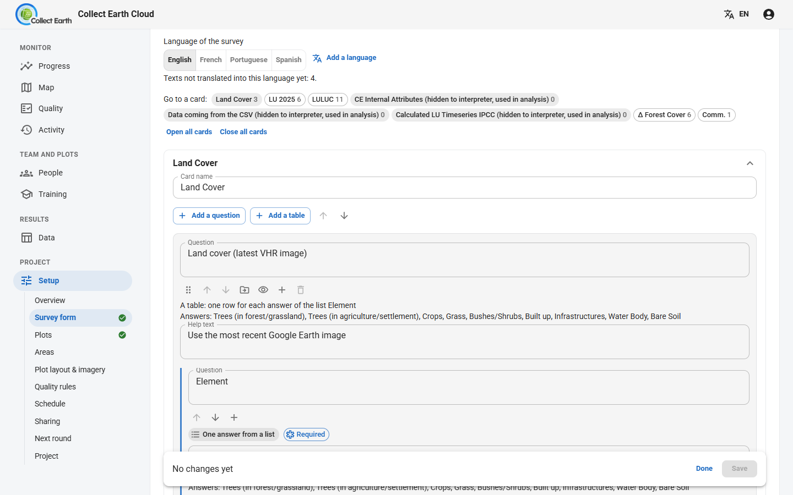
3. Sampling design
The sample decides how precise the results can be and how much work the Mapathon is. Choose the number of plots from the precision you need and the effort the team can give (section 11). Designing the sample explains each tool.
| Design | When to use it | How to make it |
|---|---|---|
| Systematic grid | National and landscape assessments; most Collect Earth projects. Even coverage, easy to repeat, plots can be shown as a map | SIGRID in the dashboard, or the Grid Generator on Earth Engine |
| Random | A quick estimate or a validation sample | Design the plots › At random, or the Grid Generator |
| Stratified random | More plots where it matters: rare classes, restoration sites, districts. Ethiopia used at least 30 plots per district (FAO and WRI, p. 46) | At random within strata, the same number in each or shared by area |
- Reuse what exists. A national forest inventory grid, or an earlier Collect Earth assessment, gives comparable results and trained people (p. 44). SIGRID plots keep their ids when the grid is made finer later.
- Plot size follows the national forest definition: 0.5 ha matches FAO's Forest Resources Assessment; Rwanda used 0.25 ha (p. 44). Set it once for everyone in Setup › Plot layout & imagery, with the sampling points and the imagery windows, before training.
- A map as an output? Decide it now: it calls for a denser systematic grid (p. 48).
- Extra columns. District, elevation, slope or ecological zone in the plot file let the results be summarised by them without GIS work (p. 37); the Grid Generator adds them.
- The plot file has one row per plot, coordinates in WGS84 decimal degrees only, a text plot id for SIGRID ids, and the same columns in every file of the project.
- Areas. Give the area of each stratum, or one total, in Setup › Areas, so the analysis turns plots into hectares.
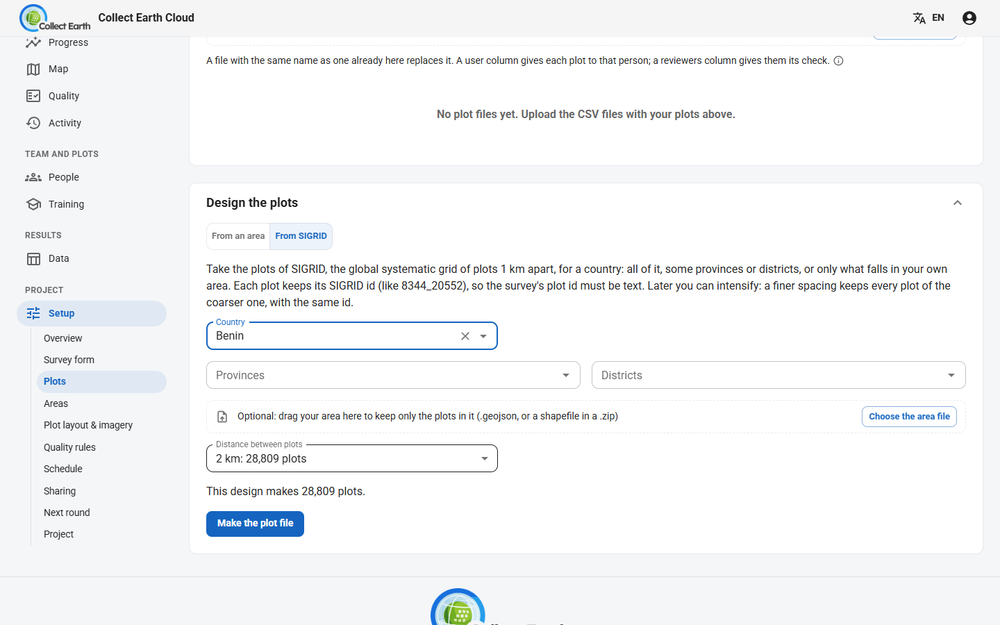
4. Organising the event
Start several weeks ahead (FAO and WRI, p. 51): finding interpreters and a venue with good internet takes longer than setting up the project.
The people
- Look in universities, local NGOs, government offices and the communities of the area. Give priority to women, youth and marginalised groups: they read the landscape from different experience (p. 52).
- No GIS skills are needed. Basic computer literacy and reading maps are the minimum; knowing the area is strongly preferred (p. 52).
- Pair community members with interpreters experienced in Collect Earth, as in India, to bring local knowledge into the answers (p. 52).
- A daily stipend and a certificate help people set aside their usual work (p. 52, 54).
- Universities can bring participants, a computer lab and continuity: lecturers can repeat the exercise with their students (p. 52).
Venue and equipment
| What is needed | |
|---|---|
| Venue | Accessible to participants, a strong internet connection, space for every computer. A computer lab is best (p. 53). |
| Required | A 64-bit Windows, macOS or Linux computer per interpreter, with Chrome, Edge or Firefox; a projector or large screen for training (p. 53). |
| Recommended | A second screen per interpreter: Collect Earth lays Google Earth Web and the other imagery out over two screens by itself. A spare internet connection. |
| Support | Someone from IT on site for the whole event (p. 53). |
Install Collect Earth on every computer before the event and start it once to check it (p. 53). It needs no administrator rights and brings its own Java; with antivirus rules, restricted folders or a proxy, see If it does not install or start on Windows. Unlike Collect Earth 1, interpreters need no Google Earth Engine account: Collect Earth Explorer reaches Earth Engine through the server.
The cloud project
Create an account on cloud.collectearth.org and press New project (or use your own server). Then work through Setup (see Running a cloud project): the survey, the plot files (not given out yet), the areas, the plot layout and imagery, the quality rules (section 8) and the schedule with its deadline.

The invitation
Send it two weeks ahead, with (FAO and WRI, p. 54):
- why the Mapathon is held, what it will produce and what participants will learn;
- the venue, the agenda, and who pays for travel, lodging and meals;
- whether to bring a laptop, and if so the link to install Collect Earth before coming;
- Collect Earth Cloud's invitation link (People › Invite people, role Collector, as many people as will come, None: I give them plots later), sent again the day before.
A short webinar a week before, on the objectives, the landscape and the survey, confirms that people have read the material and starts building the group (p. 53). Prepare a short form for the start and the end of the event: experience and expectations before, what was learned and what to improve after (p. 54).
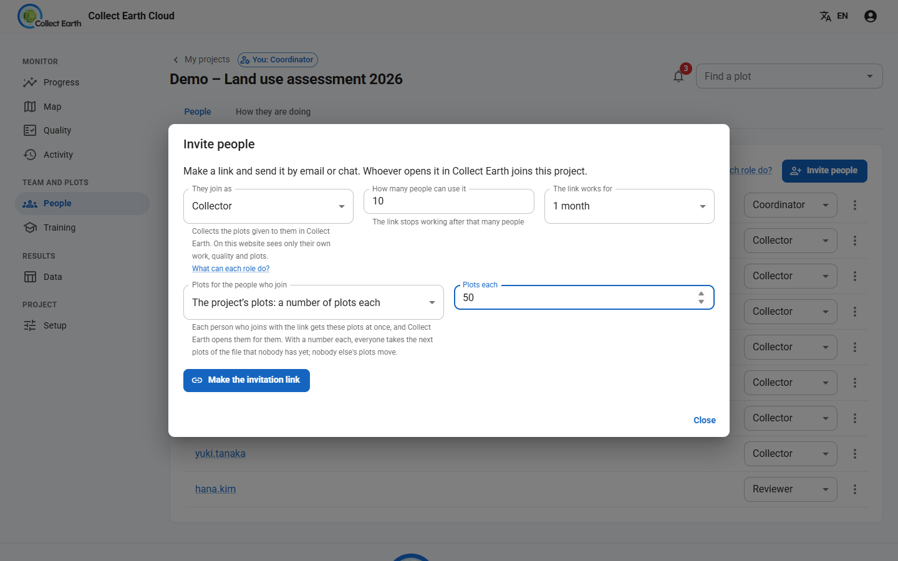
5. Preparing the training
Training is where the consistency of the data is won: teach how to read the imagery, not only how to use the program (FAO and WRI, p. 58).
- An interpretation key. The definitions the group applies (forest, its canopy cover and height thresholds, the land use classes, following the IPCC hierarchy), each illustrated with screenshots of example plots (p. 60). Include the hard cases: seasonal changes, plantations, trees on farm boundaries, degraded land. Reading land use change describes the method to teach.
- Field photos beside the imagery. Photos of known places shown next to their satellite image, or a short field visit, connect what people know on the ground with what they see from above (p. 61).
- Training sets in the dashboard. On Training › Add a training set: kind Calibration, Copies of plots of a plot file of the project, 20 plots per day, Everyone in the project, and whoever joins. The copies carry ids of their own, so nothing done in training reaches the real data. A second set from the same file gets other plots.
- Reference plots. Have an expert assess a set of plots in advance. Every collector gets them blind on top of their own plots, which measures each person's accuracy during the whole event. Mark them in Setup › Quality rules › Reference plots with the expert as their assessor, have the expert finish them before the event, and set the Accuracy target on the same page (80% unless you change it). 30 or more is a good start.
- Experts in the room. At least two, or one for every 10 interpreters (p. 62).

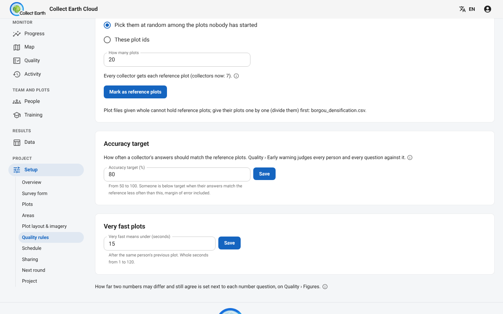
6. Training days
Plan at least two full days of training: in Ethiopia and Rwanda, 1.5 days for 20 people proved too little (FAO and WRI, p. 52–53). Do not start the real collection until the group agrees on the questions that drive the results.
| When | Day 1 | Day 2 |
|---|---|---|
| Morning | Welcome, the purpose and the audience (section 1), the start-of-event form. Everyone joins the project from Collect Earth with the link; the training plots open by themselves. Install and network problems solved now | Second calibration set, alone. Then the plots where answers still differ, together |
| Late morning | The survey and the interpretation key, plot by plot on the projector | Use the proposed answers as golden and Use as learning plots: each person sees the agreed answer after each plot, and a score |
| Afternoon | First calibration set (20 plots), each person alone, without discussing. Follow the agreement on the set's page | A quiz on the hard cases; fix any last survey problem; finish the training (below) |
| End of day | The plots where answers differ, on the screen, together. Each rule agreed goes into Quality › Notes | Give out the real plots (section 7) |
Days of about eight hours, with a 15-minute break every two hours; short quizzes and a look at the first results keep attention up (p. 53–54).
Closing the training. Print or save the report of each set (the only place where the answers plot by plot stay), then press Finish the training. The answers are deleted from the server and, at the next sync, from every Collect Earth; scores, agreement and golden answers are kept. The project's progress and quality figures then start from zero.
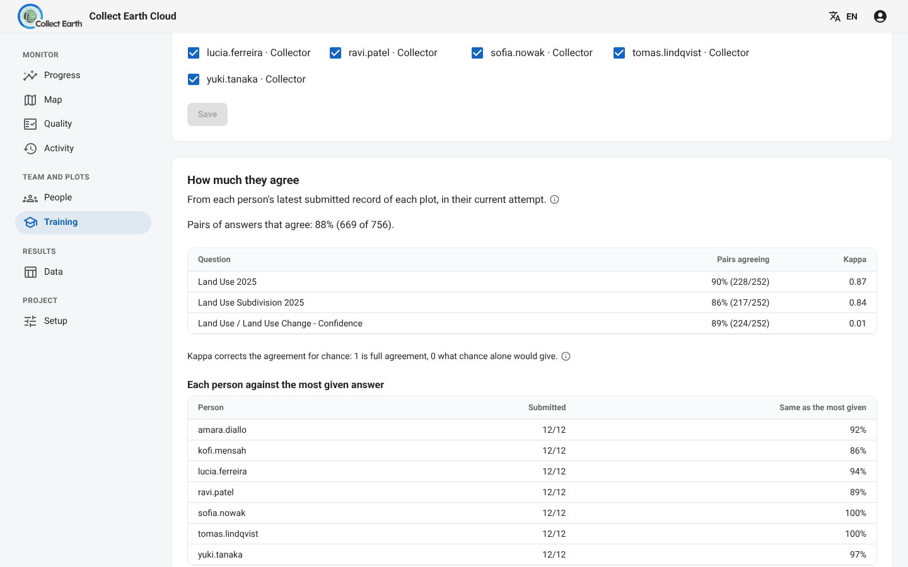
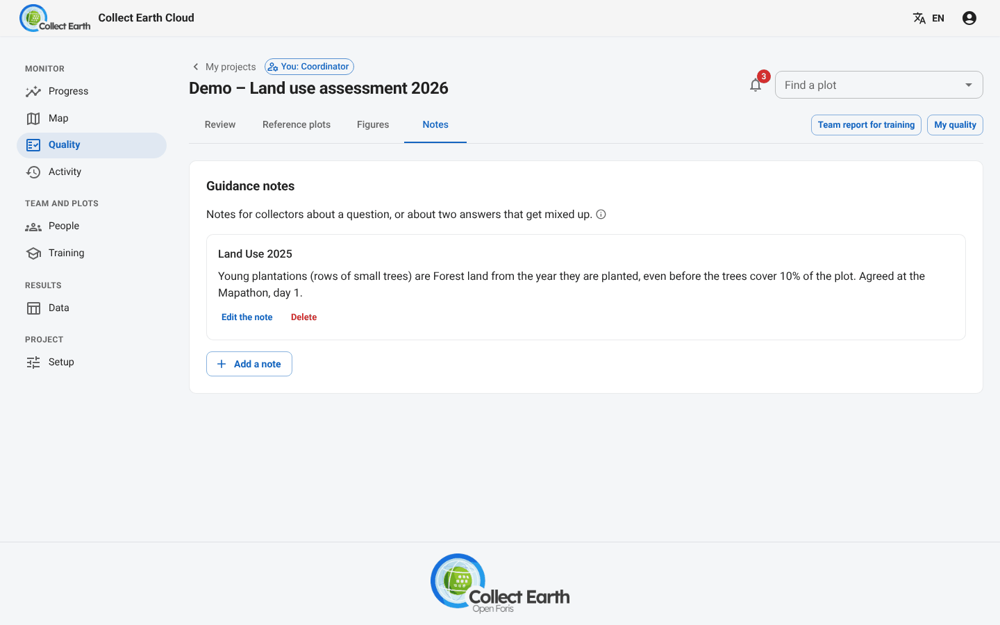
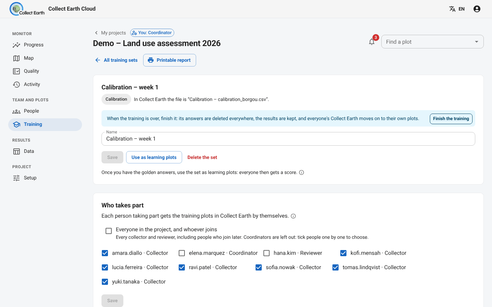
7. Giving out the plots
Give out the real plots in one step after training, with the blind quality-check share included. Each person's plots reach their Collect Earth within five minutes, with no files to send.
| In Setup › Plots › Divide the project's plots | Use it when |
|---|---|
| Evenly between people | The group has similar experience and time |
| Give each person a share in percent | Some work part-time; under 100% keeps plots in reserve |
| By a column (district, stratum) | People know a region; or pair local knowledge with its region |
| Mix them | Each person's plots spread over the whole area, so quality figures are not biased by region |
| Quality check | Always: some plots also go to a second person, blind, so differences can be found and discussed (FAO and WRI, p. 62) |
During the event, Share again what is left (by pace), Move plots… and Select plots on the map rebalance the work; what someone has submitted always stays theirs.

8. Collection days
Catch problems on the first day, while they are cheap to fix, and put precision before speed (FAO and WRI, p. 63).
| When | Where | What to look for |
|---|---|---|
| Morning | Quality › Early warning | The layer it says to start with: the reference, a question, a person or a plot (below) |
| Morning | Progress | Plots submitted, Needs attention, When will it be done? against the deadline |
| Morning | People › How they are doing | Speed, last sync and agreement per person |
| Through the day | In the room | Experts answer questions at the computers; a question asked twice becomes a guidance note |
| Midday | Quality › Review | New disagreements on blind checks: decide them, or discuss them with the two people |
| End of day | Quality › Plots worth a look | Plots done very fast, identical answers in a row, missing required answers |
| End of day | Data › Open the analysis | Contradictions and outliers: forest with 0% tree cover, 90% tree cover on bare land, answers outside the national definition (p. 62–63) |
- Find where a problem comes from before talking to anyone. Quality › Early warning tells a wrong reference and an unclear question apart from a person who needs help (below).
- The first day counts most. Set Setup › Quality rules to copy each person's first plots to an expert, and talk to anyone who drifts from the key before they repeat it on hundreds of plots.
- Re-measure the pace after day 1: the plots per person per day tell whether the plan holds (p. 63). If When will it be done? passes the deadline, move plots or add people now.
- Interpreters check their own work. Give them a list of checks for their own plots (My work in the dashboard); Ethiopia spent a day on it, and people become more careful when they correct their own errors (p. 63).
- Time per plot is visible only to the organiser; very quick plots are flagged.
- Partners can follow progress through a read-only link with no names (Setup › Sharing).
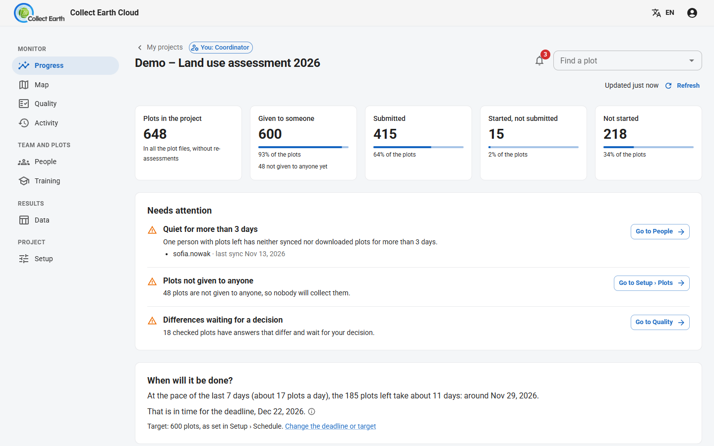

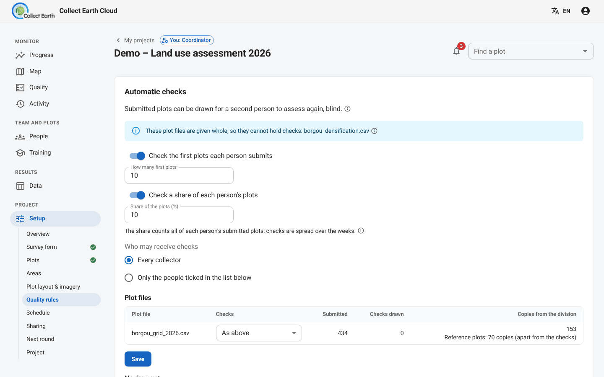
Early warning: where a problem comes from
From the first reference plots, Quality › Early warning compares every collector's answers with the reference and with each other, and sorts what it finds into five layers. Read them from the top: a problem in one layer explains problems in the ones under it. A wrong reference makes everyone look wrong, and an unclear question makes each person look wrong, so settle the upper layers first. The top of the page names the layer to start with.
| Layer | What it shows | What to do |
|---|---|---|
| 1. Is the data coming in? | People who are quiet or have not downloaded their plots, work that is not sent, an old project file or an old Collect Earth, plots given to nobody | The button on each line goes to People or Setup › Plots |
| 2. Can the reference be trusted? | Reference plots the expert has not assessed yet, and reference answers that more than half of at least three collectors contradict with one same answer | Open each plot with its assessor. If the reference is wrong, the assessor corrects it in Collect Earth and sends it again, and every figure follows. If it is right, most people share a misunderstanding: write a guidance note and say it in the room |
| 3. Is a question the problem? | Each question against the target, how often two collectors gave the same answer on the same plot (with kappa), and what that suggests: the wrong answers are mostly a few people's; collectors agree with each other but not with the reference; or they disagree with each other too, so the question is unclear | Fix the question for everyone first: a guidance note with examples, a clearer interpretation key |
| 4. Is it someone in particular? | Who is below the target, who to watch, the question they are weak on, whether they are improving, and how many reference plots they have done | Talk to the people below target the same day, with a few of their reference plots open |
| 5. Are some plots hard for everyone? | Reference plots that fewer than half of the collectors get right, and the plots worth a look waiting in the review queue | Go through them with the whole group: they are the borderline cases the key should cover |
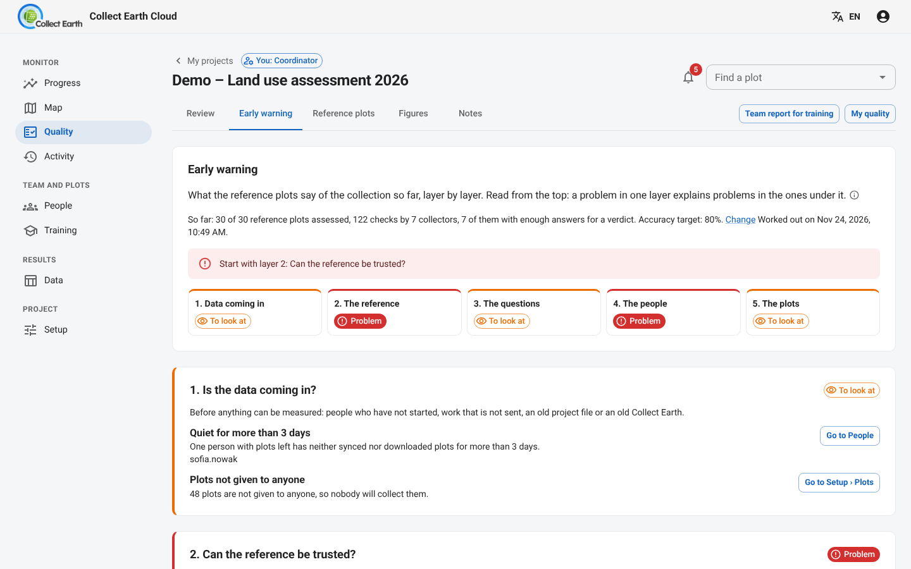
Reading it with few plots. Nothing is hidden for being few: each share is shown as a count, such as 9 of 18, with a bar.
- The bar. The dot is the share of answers that match the reference. The band around it is the margin of error: wide with few answers, narrow with many. The tick is the accuracy target.
- Below target: the whole band is under the tick, so it is not chance. It is never said with fewer than 5 answers compared.
- Watch: under the target so far, but the band still reaches it. More plots will tell.
- On target: at the target or above. Too early to say: right so far, with fewer than 5 answers.
- Improving and Getting worse compare a person's latest 10 reference plots with the ones before, and appear only when the change is 10 points or more and beyond chance.
Progress › Needs attention shows Below the accuracy target and Reference answers in doubt when there is something to see, each with Open Early warning. Collectors are never told which plots are reference plots, and never see this accuracy.
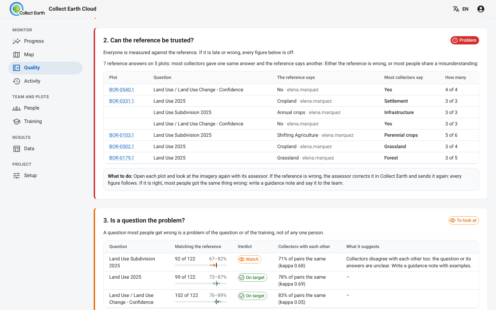
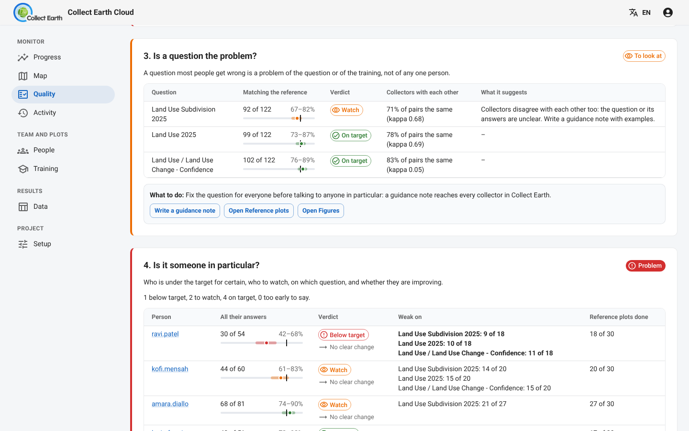
9. Quality control after the event
The data is final when every disagreement has a decision and the quality figures are written down.
- Decide the disagreements in Quality › Review, one plot at a time: First is right, Check is right, Both need another look, or Correct it in Collect Earth, which sends the plot to someone you choose to correct in their own Collect Earth. The organiser's decision is the plot's final answer in every download.
- Correct or reassess plots with errors rather than dropping them: dropping plots can bias the sample or leave it too small (FAO and WRI, p. 66).
- Read the figures. Agreement by question shows which definitions need work; Agreement by person who needs support; Mixed-up answers which classes are confused. Reference plots gives each person's accuracy with its margin of error, and how often collectors agree with each other; Early warning should end the event with no reference answer in doubt.
- Field checks (groundtruthing). Visit a random set of plots, leaving out places that need long permits, and note that this narrows the sample (p. 66–68). Take local officials along: in Rwanda the district forest officer joined the 14 visits in one day; in India, 35 field points matched the Mapathon data better than the official map (p. 67–68). Record for each plot: date, plot id, photo, land cover expected from Collect Earth and observed, trees and shrubs present and how many, disturbance, land management and tenure (p. 69).
- Write it down: the share checked blind, the agreement, the accuracy target and the reference-plot accuracy with its margin, the reference answers that were corrected, how disagreements were decided and what the field checks found. It belongs in the methods of every report.
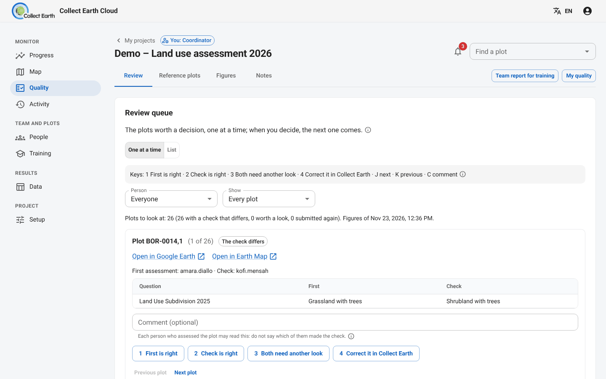
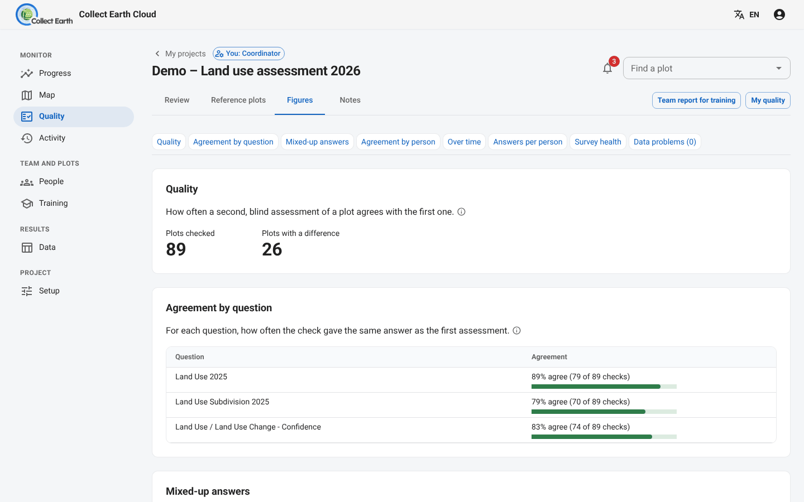
10. Analysis and presenting results
Analyse for the audience and the questions of section 1, not for everything the data could show (FAO and WRI, p. 72).
| On the Data tab | Use it for |
|---|---|
| Open the analysis, and its stand-alone file | Tables and charts by any question or column (district, ecological zone), shared with people who have no account |
| Uncertainty (IPCC) | The area of each land use with its confidence interval |
| IPCC exports | Land use change matrices, land uses year by year, a file for the IPCC Inventory Software |
| Download the data | CSV with the final decisions, answer labels and each plot's expansion factor; GeoJSON, KML or shapefile for maps |
- Report areas with their uncertainty, and say how many plots were assessed and checked.
- Summarise by the units decision-makers manage, such as districts (p. 72).
- Show the plots on a map: a systematic grid of assessed plots already reads as a map (p. 77).
- Fit the product to each audience of the data use plan: a one-page summary, a briefing, a report, a validation workshop with the people who will use the figures (p. 23).
- Leave the coordinates out (Leave out where the plots are) when plot locations are sensitive.

11. Effort and duration
A trained interpreter assesses about 100 plots a day at about five minutes a plot with the default survey (FAO and WRI, p. 53). Measure your own rate in the pilot (section 2) and again after day 1: a longer survey is slower.
Example: 4,000 plots, 10% checked twice, 100 plots per person per day and 20 interpreters give 4,000 × 1.1 ÷ 2,000 = 2.2 days. With two days of training and a margin, that is a week, the minimum the guide recommends; large areas take two weeks or more (p. 53).
| Phase | Who | How long |
|---|---|---|
| Purpose, indicators, survey and sample | Organiser, experts, decision-makers | Several weeks before |
| Venue, invitations, installing, project set-up | Organiser, IT | In parallel, from 2 to 3 weeks before |
| Training | Everyone | At least 2 days |
| Collection | Interpreters, experts | From the formula above |
| Review and field checks | Organiser, experts, officials | Days to weeks after |
| Analysis and presentation | Organiser, analyst | 1 to 2 weeks |
The case-study events cost between 4,000 and 30,000 US$ (p. 17): mostly venue, travel, meals and stipends. Collect Earth and FAO's Collect Earth Cloud are free; your own server costs about 10 to 15 US$ a month.
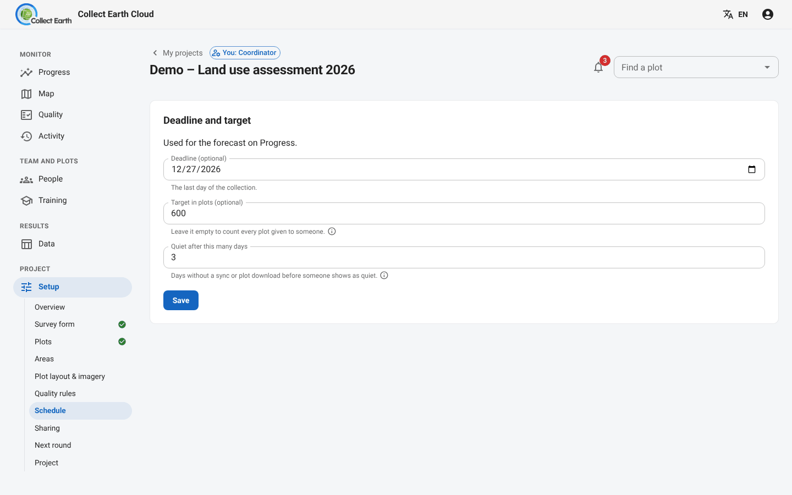
12. Keeping the data
The data is worth more over time: the same plots assessed again in later years measure change. Keep an archive that can rebuild the project without the server, in open formats, in two places.
- During the event each answer is saved first on the interpreter's computer, which keeps its last ten backups, and reaches the server within seconds. Download a Collect Earth backup at the end of each day.
- The archive: the project file (.cep), the plot files, a Collect Earth backup of every round, the answers as CSV with labels and final decisions, a map file, the IPCC outputs, the training reports, the agreement figures, the guidance notes, the interpretation key, the field-check forms, and a short readme (dates, area, survey version, team, contact).
- Close the project in Setup › Project once the archive is safe; delete it from the server only then. For the next round, Setup › Next round › Repeat this survey uses the same plots and keeps this round as an earlier period.
- Protect it. Only invited people see the project. Remove people who left, use Sign out everywhere for a lost laptop, and run your own server when the data must not leave your organisation.
- Share it. Open data and published results let others build on the work (FAO and WRI, p. 82–83).
To keep the capacity, not only the data: the people trained are what makes the next round possible. Universities and government units that took part can repeat the exercise (p. 52, 81).
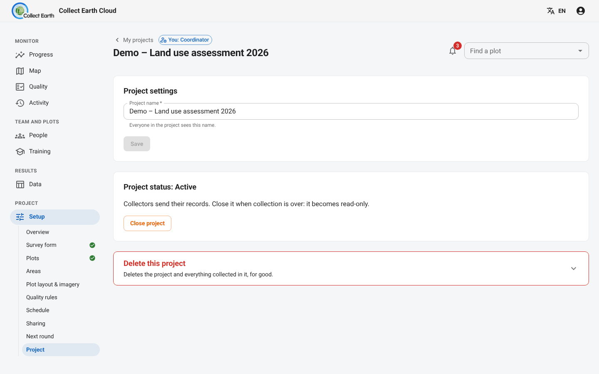
13. Checklists
Weeks before
- Data use plan written; decision-makers involved
- Indicators and area of interest agreed
- Survey built, translated and piloted; time per plot measured; version frozen
- Sample designed; plot files checked; plot size, layout, imagery and areas set
- Interpreters found; venue, computers, second screens, internet and IT support booked
- Collect Earth installed and started on every computer
- Interpretation key, field photos and training sets ready
- Reference plots marked and assessed by the expert; accuracy target set
- Invitations sent with the cloud link; webinar held; evaluation forms ready
During the event
- At least two days of training; rules agreed written as guidance notes
- Training reports saved and training finished; real plots given out with the check share
- First plots of every interpreter checked on day 1; pace re-measured
- Early warning opened every morning, starting with the layer it names
- Progress, flagged plots, contradictions and disagreements looked at every day
- Backup downloaded every day; end-of-event form filled; certificates given
After the event
- Every disagreement decided; errors corrected or plots reassessed
- Field checks done where possible
- Quality figures written down for the methods
- Analysis, uncertainty and products for each audience
- Archive stored in two places; project closed; lessons written for the next round